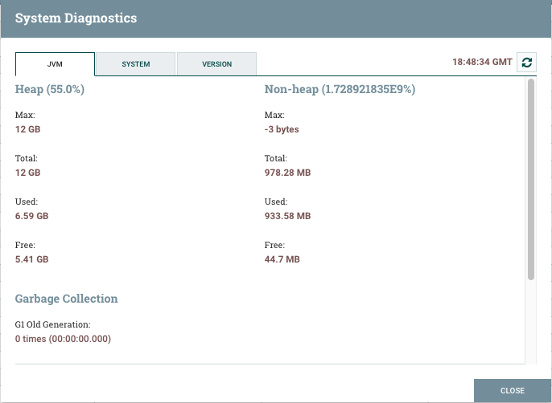
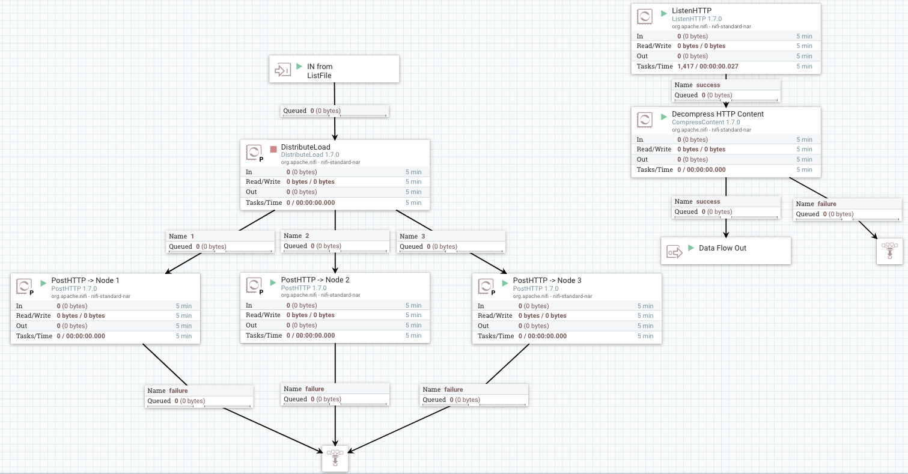

Performance Considerations
Introduction
Apache NiFi is an outstanding tool for moving and manipulating a multitude of data sources. It provides a robust interface for monitoring data as it moves through the configured NiFi system as well as the ability to view data provenance during each step.
While NiFi can be extremely performant in transitioning data from one source to another, it can be tricky to configure for optimal performance. This writeup will attempt to explain some of the basic and “advanced” configuration options and performance considerations in an effort to help developers configure the system for optimal performance.
Note: the vast majority of this information can be found by searching the web for various topics regarding NiFi. The information here attempts to provide a relatively consolidation of many of these sorts of posting found on the web.
Topics for Discussion
NiFi Configuration Files
NiFi contains basically two configuration files (bootstrap.conf & nifi.properties) and they live in the conf folder. These files allow you to provide basic settings for the NiFi application itself as well as the JVM environment NiFi runs in.
Bootstrap.conf
As mentioned earlier, the bootstrap.conf file contains various configuration settings allowing you to optimize the JVM environment for NiFi. Based upon the server capabilities (i.e. memory, processing speed, threads available, OS, etc.) you can tweak the JVM settings to get the most out of available system resources.
JVM Memory Settings
| Argument | Description |
| java.arg.2=-Xms512m | Controls the minimum (or starting) amount of memory dedicated to the JVM heap space |
| java.arg.3=-Xmx512m | Controls the maximum amount of memory allowed to be consumed by the JVM |
Keep in mind that the more flow files you anticipate having in flight at any one time will require increasing these settings. Additionally, if you’re incorporating processors into your NiFi flow that are resource intensive, you may also want to consider increasing these values. To evaluate if you have enough memory allocated to the JVM you can open up the System Diagnostics pane and view how much memory is being used at any given time along with how much space your flow files are taking up. Click the “Hamburger” menu at the top right of the NiFi UI and select Summary. Then on the bottom right side of the pane, click system diagnostics.

Garbage Collection
| Argument | Description |
| java.arg.13=-XX:+UseG1GC | This setting tells the JVM which Garbage Collection to use during runtime. Recent versions of NiFi current use the configuration above, but older ones may not so it’s best to validate this setting while also considering the version of Java you’re running to ensure whatever setting you choose is compatible. Keep in mind that smaller Java Memory Heap settings may result in more frequent garbage collection being performed. |
Running Java 8 or Later?
Consider adding the following lines to your bootstrap.conf file
| Argument | Description |
| java.arg.7=-XX:ReservedCodeCacheSize=256m | Helps to prevent compiler from switching off when the code cache fills up |
| java.arg.8=-XX:CodeCacheMinimumFreeSpace=10m | Establishes a boundary for how much of the code cache can be used before flushing of the code cache will occur to prevent it from filling and resulting in the stoppage of the compiler |
| java.arg.9=-XX:+UseCodeCacheFlushing |
nifi.properties
Most of these settings described below are the default values for an OOTB NiFi instance. You should still validate these settings.
| Argument | Description |
| nifi.bored.yield.duration=10 millis | Designed to help with CPU utilization by preventing processors using the timer driven scheduling strategy from using excessive CPU when there is no work to do. Smaller values equate to lower latency but higher CPU utilization. Increasing this value will cut down overall CPU utilization. |
| nifi.ui.autorefresh.interval=30 sec | Controls the interval between refreshing the latest statistics, bulletins, and flow revisions in the browser |
| nifi.database.directory=./database_repository | Recommend moving the location of this repo to outside the root directory of NiFi to simplify upgrading to future NiFi version. See Database Repository section for additional information. |
| nifi.flowfile.repository.directory=./flowfile_repository | Recommend moving the location of this repo to outside the root directory of NiFi to simplify upgrading to future NiFi version. See Flowfile Repository section for additional information |
| nifi.content.repository.directory.default=./content_repository | Recommend moving the location of this repo to outside the root directory of NiFi to simplify upgrading to future NiFi version. See Content Repository section for additional information. |
| nifi.provenance.repository.directory.default=./provenance_repository | Recommend moving the location of this repo to outside the root directory of NiFi to simplify upgrading to future NiFi version. See Provenance Repository section for additional information. |
| nifi.queue.swap.threshold=20000 | This setting sets the default maximum queue size for all queues between NiFi components. Increasing this value will require additional memory be allocated to NiFi since these Flow Files are stored in memory. If a queue exceeds this size, the files are swapped from memory to disk and will later be retrieved when the queue size drops resulting in increased I/O. |
| nifi.provenance.repository.query.threads=2 | Adjusts the number of system threads available for searching the Provenance Repository |
| nifi.provenance.repository.index.threads=1 | Adjusts the number of system threads available for indexing the Provenance Repository. If a significant number of Flow Files are being operated upon this setting can become a bottleneck. If you see a warning bulletin stating “The rate of the dataflow is exceeding the provenance recording rate. Slowing down flow to accommodate.” you may need to increase the number of threads available. Remember though that when you increase the number of threads available for one process you reduce the number available for other processes. |
| nifi.provenance.repository.index.shard.size=500 MB | Sets the amount of Java heap space used for Provenance Repository indexing. Larger values will result in better performance and will utilize more Java Heap space. IMPORTANT: configured shard size MUST be 50% smaller than the total configured Provenance Repository max storage size (nifi.provenance.repository.max.storage.size) Only set this value above 500 MB if you have also increased the max storage size above 1 GB. |
NiFi Repositories
Flow File Repository
This is the most important repository within NiFi. The Flow File repository contain the information for ALL flow files in flight. Each entry contains all the attributes associated with a given flow file as well as a pointer to where the Flow File’s actual content is stored within the Content Repository. It is a “Write-Ahead Log” of the metadata of each Flow File that currently exist within the system (all modifications are written to a log before they are applied). This repository provides the resiliency necessary to handle system restarts and failures.
It should be noted that Flow Files are never “modified”, but rather the original flow file is maintained during each update/modification to it and a copy is created with the updated version. This technique helps to support robust data provenance throughout the system.
Ideally, this repository should be located on a high-performance RAID that is not shared with other high I/O software and should never be located on the same RAID as the Content or Provenance repositories whenever possible. It should ideally use disk that does not compete for I/O with MarkLogic itself.
Note: if this repository become corrupted or runs out of disk space the state of flow files may become permanently lost!
Database Repository
This repository contains 2 H2 Databases. nifi-flow-audit.h2.db is used by NiFi to keep track of all configuration changes made within the NiFi UI & nifi-user-keys.h2.db which is only used when NiFi has been secured and it contains information about who has logged into NiFi.
Content Repository
The content repository is where the content, to include multiple historical versions of the content (if data archiving has been enabled), pointed to by each Flow File is stored. When a Flow File’s content is determined to be no longer needed the content is either deleted or archived (deletion and archival are configured in the NiFi properties file). NiFi documentation strongly recommends this repository be moved to its own hard disk/RAID. Additional performance gains can be obtained by defining multiple Content Repositories per NiFi instance.
To do this, comment out the nifi.content.repository.directory.default setting and then add a new setting for each Content Repository you want to define (i.e. nifi.content.repository.directory.contentS1R1 = …, nifi.content.repository.directory.contentS1R2 = …, nifi.content.repository.directory.contentS1R3 = …).
In this example the S#R# represents the system number and repository number respectively. By splitting the content across multiple disks, you can significantly increase I/O performance while also improving durability in the event of failures.
Provenance Repository
This repository contains the historical records for each Flow File. This is basically the data lineage from the point NiFi created the Flow File to the point when NiFi finished processing the it, aka Chain of Custody, and contains a record of each Flow File modification. It uses a rolling group of 16 provenance log files (default) to track events and increase throughput. The provenance data is stored in a Lucene index broken into multiple shards to support indexing and search.
Data in this repository is updated frequently and results in a lot of disk I/O. As such, you can significantly increase performance and durability by spitting the repository into multiple repositories. See Content Repository for information on how to accomplish this. Additionally, updating the nifi.provenance.repository.implementation setting in the nifi.properties file to use the org.apache.nifi.provenance.WriteAheadProvenanceRepository instead of the default PersistentProvenanceRepository.
When switching to the WriteAheadProvenanceRepository, you may wish to consider additional changes to the nifi.properties as outlined in the Hortonworks DataFlow Documentation.
NiFi Clustering
In large Production deployments, NiFi should be run in a clustered configuration. Doing so effectively multiplies the number of resources available for processing NiFi flows. Therefore, clustering allows NiFi to scale “out.” However, clustering does not provide High Availability, so is purely a scaling approach. If tuning and scaling “up” with more CPU or I/O work, there is no need for the additional complexity of clustering.
Clustering will not have any impact if NiFi is running on a server that is not maxed out and the bottleneck for your process is MarkLogic instead. Clustering is a “scaling” approach to achieve additional throughput, not for achieving higher reliability.
In a clustered environment, each member of the cluster is responsible for processing its own Flow Files and has its own individual Repositories (discussed above) while sharing the same Flow File flow configuration.
Clustering in NiFi is accomplished by using ZooKeeper. NiFi comes with and embedded ZooKeeper already included in the NiFi distribution.
-
ZooKeeper: Provides distributed configuration service, synchronization service, and naming registry for large distributed systems. Is also responsible for electing the Primary Node
-
Zero-Master Configuration: Each node performs the same task but on a different set of data. The elected Master determines what nodes can connect to the cluster based upon the node’s configured FlowFile. Each node within the cluster sends a Heartbeat status to the Master node
-
Cluster Coordinator: Responsible for carrying out the tasks to manage which nodes are allowed to join the cluster and provides the most up to date data flow to new nodes joining the cluster
Clustering Considerations
-
When a node within the cluster goes down or becomes disconnected from the cluster, the remaining nodes DO NOT pick up or process the Flow Files from the missing node since each node is responsible for handling its own set of the data. That said, when the failed/disconnected node comes back online and joins the cluster, it will resume processing its own Flow Files (assuming there are no catastrophic failure such as a corrupted Flow File Repository or running out of disk space).
-
High Availability (from the point of Automatic Failover) is not currently natively supported. However, HA could be set up using an external system to monitor nodes within the cluster and then when one node goes down, a backup node could be brought online. As long as the new node coming online references the failed node’s repositories and flow file configuration, it should be able to join the cluster. (note this is a presumption, but has not been validated) See Figure 3 for a conceptual diagram of attempting HA.
-
See Figure 1 - Data Distribution in NiFi Cluster in the Screen Shots section for a representation of distributing data across a NiFi clustered environment. In the screen shot, you’ll notice a DistributeLoad processor distributing unique flow files to each of the three HTTPInvoke processors. Each one is responsible for sending data from the Primary node to all other nodes within the cluster (including the Primary node) Note that the DistributeLoad and InvokeHTTP processors only run on the Primary node. The single ListenHTTP processor runs on all three nodes (including the Primary) and receives the data sent from the Primary.
Tips & Tricks
Assigning Threads to NiFi
When you initially set up NiFi, there is a default number of threads assigned to the host. Specifically, Maximum Timer Driven Thread Count and Maximum Event Driven Thread Count. These settings can be found by clicking the hamburger menu at the top right and selecting Controller Settings. On the General tab you’ll see the two aforementioned settings. Typically, you can leave the Max Event Driven Thread Count setting at 5 since the vast majority of processors are Timer Driven. For the Max Timer Driven Thread Count you’ll want to set this value between 2 – 4 times the number of cores your host has. So, if your host has 30 cores you can set the value to be between 60 & 120. These setting configure the maximum number of threads that can be utilized by NiFi across all processors. So, as an example if you set the number of concurrent tasks for a given processor (i.e. 5) when that processor executes it will consume 5 threads of the total allotted for NiFi. All processors will cumulatively consume threads when they execute. Keep in mind that regardless of how many concurrent tasks are configured for all processors, the total concurrent tasks cannot exceed the total number of threads assigned. By increasing the threads as described above, you can dramatically increase NiFi throughput.
Avoid Unnecessary File Modifications
It is important to understand when your metadata in a FlowFile is changed, vs. when the content referenced by that FlowFile is changed.
If you remember our earlier discussion regarding what Flow Files are comprised of and where their content is stored you’ll see that the actual content is placed on disk in the ContentRepository, with only a pointer to that content residing in the Flow File. If you run a processor that modifies the Flow File’s underlying content, that content must be fetched from disk, updated, copied and then written back to disk. The Flow File’s pointer to the content will be also updated to reference the updated content, requiring a FlowFile disk write. Additionally, additional space is taken up to store the original version of Flow File content as well as the Provenance information.
Dataflow Optimization
Ref: NiFi/HDF Dataflow Optimization (Part 1) & (Part 2)
The links above provide excellent insight into some optimizations that can be done to improve NiFi’s performance. No need to copy that information here. Briefly, look for resource exhaustion (I/O or CPU) if your flow is not running fast, or some processor is backing up. If not (there are ample disk and CPU resources) consider adding more threads. But if resources are exhausted, you must optimize the flows, reduce threads, or cluster. More and better details are in the linked web pages.
Handling Large Files
Large files can take on many forms such as binary video files or text-based files like CSV, JSON, or XML. In the latter case, these files are typically “record-based” such that the single file represents 1 – N individual records. In this case, you should avoid trying to load the entire file into memory and then splitting it into individual flow files. Instead, use a “record-based” processor (i.e. ConvertRecord) that allows the file to be processed using streaming. This will preclude the need to load the entire file into memory. Here is a blog post explaining the various Record Streaming processors and how to interact with them.
Additional things to consider are:
-
Ensure individual nodes have enough memory configured to handle the anticipated number, type, and size of files
-
Ensure the flow file and content repositories have enough disk space to accommodate the anticipated quantity and size of files to be processed
Handling Disconnected Nodes
If a node fails/becomes disconnected from the cluster and is unable to rejoin, look in the nifi-1.x.x/logs directory. The nifi-app.log file will log most all NiFi activity including errors. Here are some thing to look for:
-
You may see something indicating the node’s Flow File configuration is out of date. This issue was largely seen with older versions of NiFI (previous to 1.0.0). In this case simply delete or rename the flow.xml.gz file in the conf directory and restart the node. When the node attempts to connect, the Primary Node (i.e. Cluster Coordinator) will see the rejoining node has no Flow File template and will then provide the most current one to that node.
-
Ensure regular heartbeats are being sent to the Cluster Coordinator. If the Cluster Coordinator doesn’t receive regular heartbeats (interval configured in the conf/nifi.properties file) the node sending the heartbeat notifications will become disconnected. The Cluster Coordinator will wait 8x the configured nifi.cluster.protocol.heartbeat.interval before disconnecting a node. This can happen for numerous reasons such as network latency between the node and the Cluster Coordinator or excessive garbage collection. In the latter case, ensure you have configured enough Java Heap Memory for the node.
Figures
Figure 2 - Data Distribution in NiFi Cluster

Note: The Decompress HTTP Content processor is only needed if you have configured the PostHTTP processors on the Primary node to perform data compression (Compression Level property)
Figure 3 - Conceptual HA Diagram